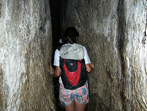

Hezekiah's Tunnel
Useful Information
| Location: | Jerusalem, Old City. |
| Open: | All year Sun-Thu 9-17, Fri 9-15, Sat closed. [2004] |
| Fee: | free [2004] |
| Classification: |
 Water Supply Water Supply
|
| Light: | None, bring torches. |
| Dimension: | L=533m. |
| Guided tours: | L=533m. |
| Photography: | |
| Accessibility: | |
| Bibliography: | |
| Address: | |
| As far as we know this information was accurate when it was published (see years in brackets), but may have changed since then. Please check rates and details directly with the companies in question if you need more recent info. |
|
History
| 702 BC | tunnel built by King Hezekiah. |
| 1838 | rediscovered by Edward Robinson. |
| 1909-1911 | cleared by Montague Parker. |
| 1995 | start of exploration by Ronny Reich. |
Description
Just down the hill from
 Warren's Shaft.
The tunnel was built about 700 BC by King Hezekiah to
bring the water of Gihon into the city and store it in the pool of Shiloah, or
Siloam. Its purpose was to prevent invaders, in particular the Assyrians, from
locating the city's water supply and cutting it off (II Chronicles 32).
Warren's Shaft.
The tunnel was built about 700 BC by King Hezekiah to
bring the water of Gihon into the city and store it in the pool of Shiloah, or
Siloam. Its purpose was to prevent invaders, in particular the Assyrians, from
locating the city's water supply and cutting it off (II Chronicles 32).
The tunnel is narrow and wide in places, you can wade through it. The water is normally about half a metre deep. Due to the siphon effect it does occasionally rise, but only by about 15 to 20 cm.
The entrance steps leading down to the water are medieval, built due to the ground level having risen over the years. After about 20 meters the tunnel turns sharply to the left, where a chest high wall blocks another channel which leads to Warren's Shaft. Towards the tunnel's end the roof rises. This is because the tunnellers worked from either end and one team slightly misjudged the other's level. They had to lower the floor so that the water would flow. A Hebrew inscription was found in the tunnel, and a copy can be seen in the Israel Museum in the New City of Jerusalem. Carved by Hezekiah's engineers it tells of the tunnels construction.
You enter the tunnel at the Gihon Spring source on Shiloah Way, down in the Kidron Valley and just south of the rest house. The wade takes about 30 minutes; wear shorts and suitable footwear. Candles are available from the caretaker or a nearby shop.
Text by Tony Oldham (2004). With kind permission.
|  |
| Image: Hezekiah's Tunnel, Jerusalem, Israel. Photographer: Professor Mark A. Wilson, Department of Geology, The College of Wooster. |
This water adit is really famous, as it is the greatest holdover of water
engineering technology of the pre-Classical period.
The only structure of comparable importance is the
Tunnel of Eupalinus
on Samos in Greece.
This tunnel was made with contemporary technology, and exact surveying was not known at this time. The tunnel has many turns, the reason for the turns is unknown. Some talk about following a crack in the rock, others about following a small karst cave, which is was destroyed completely by the tunnel. Possible are also different rock types, which made deviations necessary. The tunnel is 530m long, but if it had been built in a straight line it would have been 335m long, about 40% shorter.
The tunnel was built from both sides and the engineers managed to meet at last. The way they did this is not completetely solved, but most likely they heard the other team digging and headed towards the sound. There are also air vents to the surface which allowed "navigation".
"It was Hezekiah who blocked the upper outlet of the Gihon spring and channeled the water down to the west side of the City of David."
The Bible, Chronicles II 32:30
"As for the other events of Hezekiah's reign, all his achievements and how he made the pool and the tunnel by which he brought water into the city..."
The Bible, Kings II 20:20
"When Hezekiah saw that Sennacherib had come and that he intended to make war on Jerusalem, he consulted with his officials and military staff about blocking off the water from the springs outside the city, and they helped him. A large force of men assembled, and they blocked all the springs and the stream that flowed through the land. "Why should the kings of Assyria come and find plenty of water?" they said."
The Bible, Chronicles II 32:2-4
"[...when] (the tunnel) was driven through. And this was the way in which it was cut through: While [...] (were) still [...] axe(s), each man toward his fellow, and while there were still three cubits to be cut through, [there was heard] the voice of a man calling to his fellows, for there was an overlap in the rock on the right [and on the left]. And when the tunnel was driven through, the quarrymen hewed (the rock), each man toward his fellow, axe against axe; and the water flowed from the spring toward the reservoir for 1200 cubits, and the height of the rock above the head(s) of the quarrymen was 100 cubits."
The Siloam Inscription.
- See also
 Search Google for "Hezekiah's Tunnel"
Search Google for "Hezekiah's Tunnel" Google Earth Placemark
Google Earth Placemark Hezekiah's Tunnel - Wikipedia
(visited: 13-OCT-2010)
Hezekiah's Tunnel - Wikipedia
(visited: 13-OCT-2010) Hezekiah's Tunnel [Siloam Tunnel] Ancient Mine, Quarry or other Industry : The Megalithic Portal and Megalith Map:
(visited: 13-OCT-2010)
Hezekiah's Tunnel [Siloam Tunnel] Ancient Mine, Quarry or other Industry : The Megalithic Portal and Megalith Map:
(visited: 13-OCT-2010)- Hezekiah
at Wikipedia.
- Hezekiah's Tunnel
- Siloam Inscription & Hezekiah's Tunnel